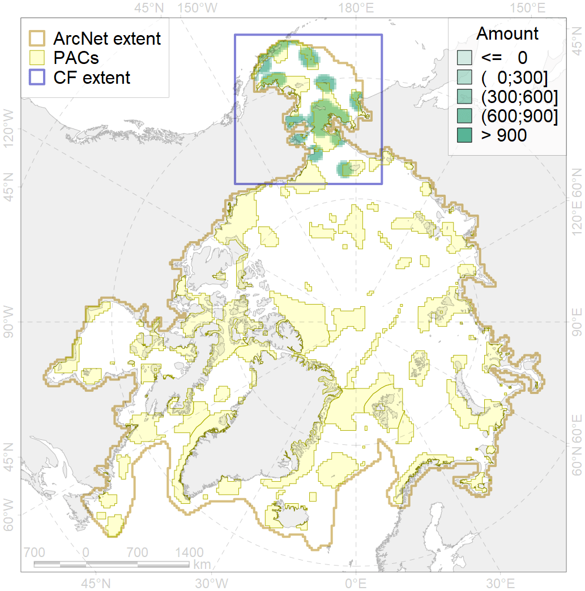
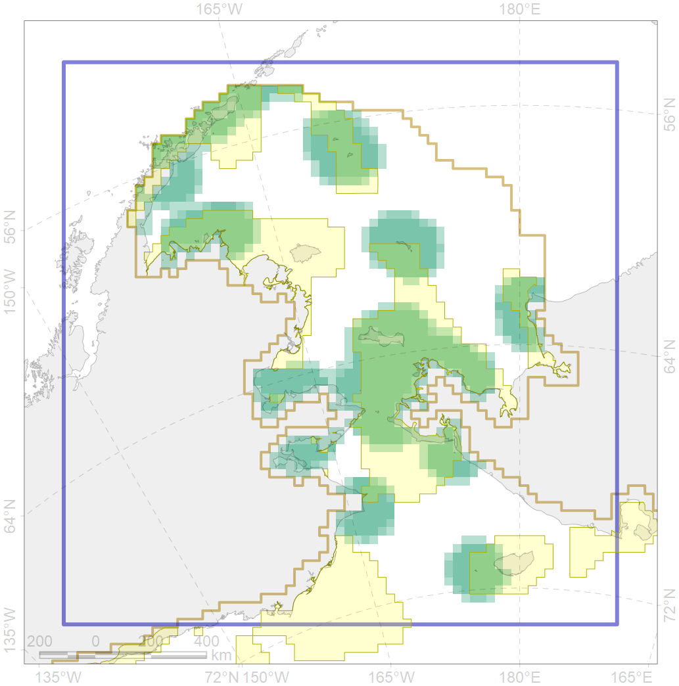

6102

| CF ID | 6102 |
| CF Name | Common murre (Uria aalge inornata) breeding colonies buffer feeding area |
| Time Period | 1985-2017 |
| Source(s) | Stishov et al 1991, Ramsar sites 2001, Kondratuev 1997, Zubakin et al 1992, Bogoslovskaya 1988, Dorogoi 1995, Dorogoi 1992, Galanin & Zaiko 1998, Chronicle of nature… 2018, Circumpolar Seabird Data Portal http://axiom.seabirds.net/maps/js/seabirds.php?app=circumpolar#z=2&ll=NaN,0.00000 |
| Seasonality | April-August |
| Depth Horizon | ≥0 m |
| Methodology | Buffer around colonies |
| Author Name | Gavrilo, Tertitski |
| Notes | |
| Conservation Target Set in the Scenario | 0.36 |
| Conservation Target Achieved in the Scenario | 0.606 (Scenario: 168.2%) |
| PAC ID | Proportion in the PAC | Contribution to ArcNet Target Achievement | PAC’s Contribution to the Achieved Target |
|---|---|---|---|
| 1 | 6.7% | 18.7% | 11.1% |
| 2 | 6.4% | 16.2% | 9.6% |
| 3 | 8.2% | 20.0% | 11.9% |
| 4 | 3.3% | 7.5% | 4.5% |
| 5 | 33.5% | 86.1% | 51.2% |
| 6 | 0.2% | 0.5% | 0.3% |
| 7 | 3.6% | 9.4% | 5.6% |
| 60 | 0.0% | 0.0% | 0.0% |
| inner | 61.9% | 158.5% | 94.2% |
| outer | 38.1% | 9.7% | 5.8% |